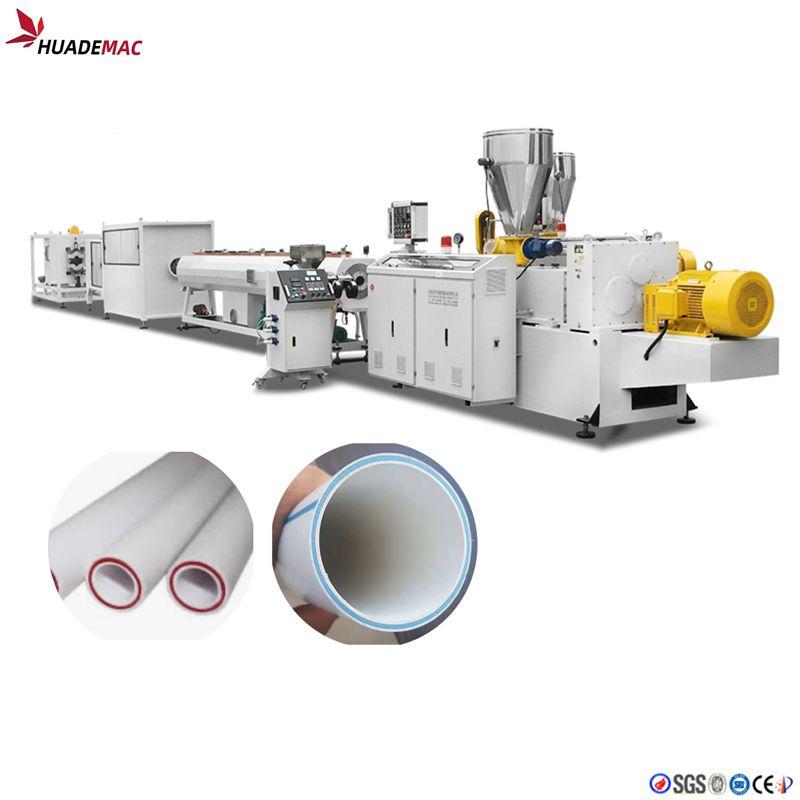
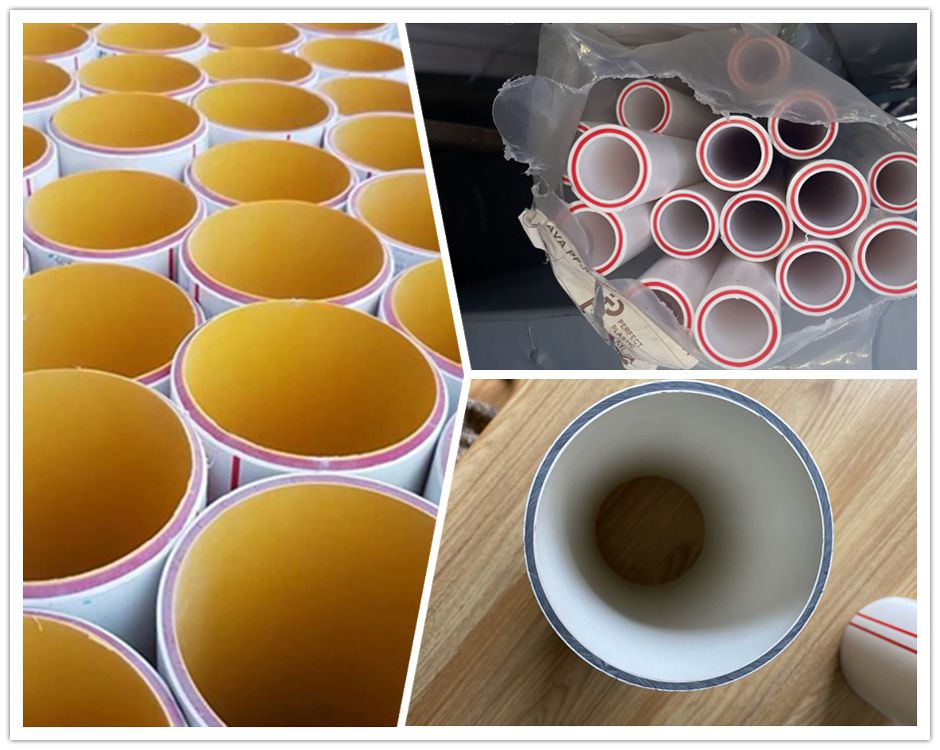

3 Layer PVC UPVC Pipe Production Line
Use separate extruders to feed the core and surface layers of three-layer PVC pipe.
Inquire about this product Prepare a detailed project brief
Equipment overview
PVC 3 layer pipe manufacture machine includes two main extruders: one is for making outer&inner layers and another one is for making middle layer.
PVC pipe manufacture machine is mainly used in producing of PVC pipes with various tube diameter and wall thickness in the aspects such as the agricultural, constructional, and cable laying etc.
PVC pipe manufacture machine is composed of the conical twin-screw extruder, vacuum modes such as two claw, three claw and so on.
Choose the saw blade cutting type or the planetary cutting type. It is additionally attached manufacturer of the inner wall spiral coil according to the client requirements. Produce inner wall spiral pipe, inner wall hollow and core foam pipe, ect.
PVC extruders require twin screws to handle the extra wear and tear caused by the rough nature of raw PVC materials.
Technical specifications
Reference configurations from the product catalogue. Confirm output, dimensions and equipment selection for your material and project.
| Pipe diameter(mm) | 50,75,90,110,160 | 110,160,200,250,315 |
|---|---|---|
| Extruder(for middle layer) | 65/132 | 80/156 |
| Extruder (for outer& inner layer) | 65/132 or 55/110 | 65/132 |
| Length of vacuum tank(mm) | 6000 | 6000 |
| Haul-offs machine | 3 caterpillar | 4 caterpillar |
| Cutting machine | planetary cutting | planetary cutting |
| capacity (Kg/h) | 250-350 | 350-450 |
Detailed Images
Extrusion Process
Plastics extrusion is a high-volume manufacturing process in which raw plastic is melted and formed into a continuous profile. With the development of economy, more and more plastics are used in people's daily life. Consequently, a large quantity of plastic extruder, plastic extrusion line, plastic extrusion machine are used to process PP, LLDPE, LDPE, HDPE, PVC, ABS, etc. in pipe extrusion, profile extrusion, filament extrusion, film extrusion, sheet extrusion and pelletizing.
We have focused on plastic machinery over 21 years with rich experience and strong technology .top quality and the turn-key service including installation , test running and training workers in your local factory . we are your trustworthy partner !

Equipment video
Ask about this machine
3 Layer PVC UPVC Pipe Production Line